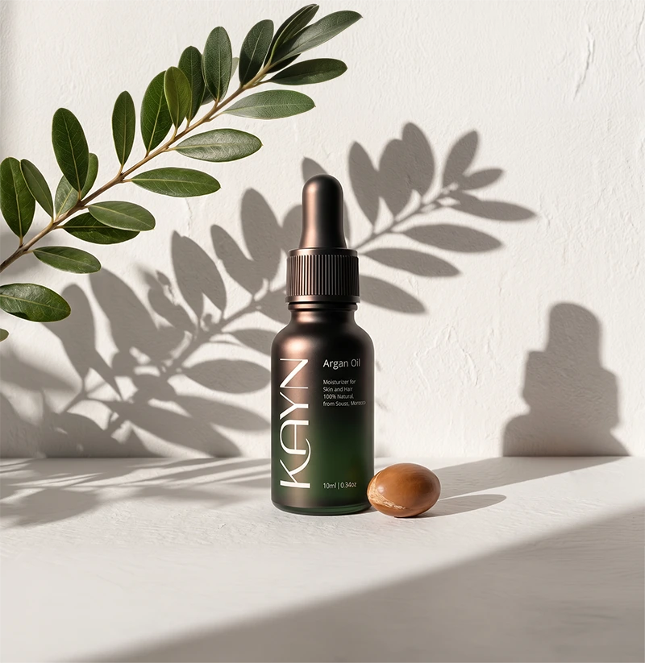
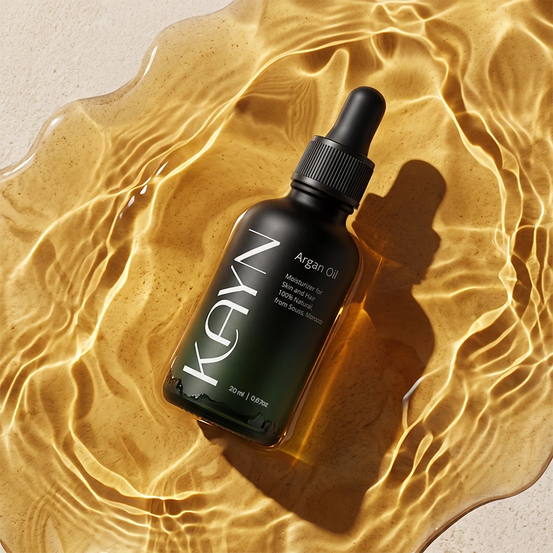
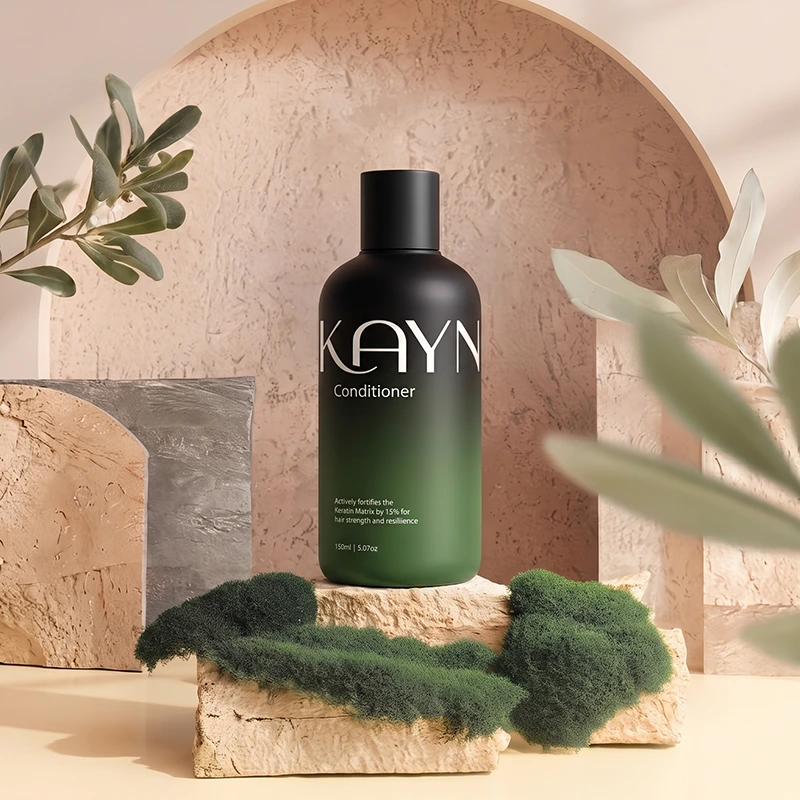

Golden Drop of Nature
Experience the secret to timeless beauty, sourced directly from nature. Our oil is expertly crafted to enhance your skin’s radiance and hair’s natural shine.
Shop NowThe finest argan, for the purest you
-
Direct from Agadir’s Heart
Features an independently verified 99.8% Triterpene content. Meticulously sourced from Agadir for pure, restorative power.
-
Hair Resilience Fortified
Actively fortifies the hair’s Keratin Matrix by 15%, significantly reducing breakage and restoring structural strength.
-
Sourced with Care & Tradition
Our Slow-Pressed method preserves 100% of beneficial Omegas, ensuring maximum antioxidant and restorative power.
-
Nutrient Density for Multi-Use
High Micro-Nutrient Density Factor (MNDF) makes this one oil a powerhouse for 3 key areas: skin, hair, and nails.
-
12-Hour Hydration
Scientifically reduces Trans-Epidermal Water Loss (TEWL) by up to 25%, protecting and plumping your skin all day.
-
Visibly Brighter, Naturally
Promotes an 18% increase in cellular renewal within four weeks, gently accelerating your natural glow and luminosity.
-

$10
Kayn Essential Oil 10ml
This high-potency, 99.8% Triterpene serum visibly reduces Trans-Epidermal Water Loss (TEWL) while promoting up to 18% cellular renewal for luminous, hydrated skin… more
-

$25
Kayn Essential Oil 20ml
This high-potency, 99.8% Triterpene serum visibly reduces Trans-Epidermal Water Loss (TEWL) while promoting up to 18% cellular renewal for luminous, hydrated skin… more
-

$15
Kayn Conditioner 150ml
Enriched with Slow-Pressed Omegas, this formula seals the cuticle, delivering deep, lasting hydration and reducing breakage for ultimate manageability and shine… more
The elegance your hair deserves
Our Slow-Pressed Argan oil actively works on a molecular level to transform hair health. It significantly fortifies the Keratin Matrix, strengthening strands by up to 15% to dramatically reduce breakage and split ends. Rich in essential fatty acids and Omegas, it effectively seals the hair cuticle, locking in vital moisture and imparting an unparalleled, lasting shine and softness that transforms dry, dull hair…
Read moreThe authentic gold standard for skin
This potent serum features an independently verified 99.8% Triterpene content, delivering superior anti-inflammatory and restorative benefits to the dermis. It scientifically reduces Trans-Epidermal Water Loss (TEWL) by up to 25% for deep, all-day hydration, while promoting up to 18% cellular renewal, resulting in visibly diminished fine lines and a refined, luminous, and healthy complexion…
Read moreUnveiling the secret of Moroccan purity
Our commitment to quality begins at the source: a personal, direct partnership with a trusted factory in Agadir, Morocco. This artisanal ritual ensures every First-Press drop is 100% pure, meticulously Slow-Pressed to preserve all beneficial Omegas, delivering the highest efficacy and authentic Moroccan legacy to your routine.